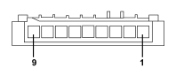

H005A STEERING COLUMN SWITCH UNIT (DASHBOARD)
- Path
- Electrical equipment > 3 CONNECTORS > H MANUAL ELECTRIC CONTROLS > H005 STEERING COLUMN SWITCH UNIT > H005A STEERING COLUMN SWITCH UNIT (DASHBOARD)
- Kind
- connector pinout (pin -> wire colour -> other end)
- Applies to
- all engines; all production periods
- Interactive page
- https://sloeber94.github.io/elrnDB-fPnd/en/#/169003214
Applies to: all engines; all production periods

Wiring | Colour |
|---|---|
- |
Pin | Cable | Destination | |||
|---|---|---|---|---|---|
Sec.. | Colour | Node | Connect. | Pin | |
1 | 0,35 | AB (light blue with white stripe) | 4 | ||
2 | 0,35 | AG (light blue with yellow stripe) | 29 | ||
4 | 0,35 | SV (pink with green stripe) | 33 | ||
6 | 0,35 | GR (yellow with red stripe) | 34 | ||
7 | 0,35 | BN (white with black stripe) | 32 | ||
8 | 0,35 | HR (grey with red stripe) | 31 | ||
9 | 0,35 | LN (blue with black stripe) | 30 | ||